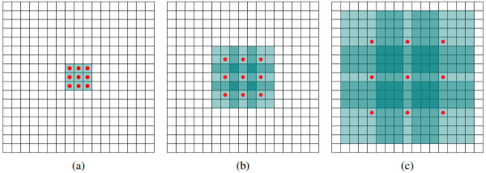

简单易懂的博客：https://www.zybuluo.com/hanbingtao/note/433855
CNN卷积神经网络
前言
虽然前面的博客很好的介绍了基础的全连接神经网络（因为已经非常清晰所以在自己的笔记里也就不再整理了），但是对CNN的介绍还是有点突兀，因此再参考了另一些博客后自己整理了一下，因为笔记部分是基于自己的理解，部分是搬迁，所以没有用到大多数术语，追求规范的理解还是建议寻找其他网站
预备知识
全连接神经网络 与 bp算法，相关了解可以见https://www.zybuluo.com/hanbingtao/note/433855中的一二三部分。
卷积神经网络概述
全神经网络对于图像识别任务，有一下几个缺憾：
- 参数数量太多 考虑一个输入10001000像素的图片(一百万像素，现在已经不能算大图了)，输入层有10001000=100万节点。假设第一个隐藏层有100个节点(这个数量并不多)，那么仅这一层就有(10001000+1)100=1亿参数，这实在是太多了！我们看到图像只扩大一点，参数数量就会多很多，因此它的扩展性很差。
没有利用像素之间的位置信息 对于图像识别任务来说，每个像素和其周围像素的联系是比较紧密的，和离得很远的像素的联系可能就很小了。如果一个神经元和上一层所有神经元相连，那么就相当于对于一个像素来说，把图像的所有像素都等同看待，这不符合前面的假设。当我们完成每个连接权重的学习之后，最终可能会发现，有大量的权重，它们的值都是很小的(也就是这些连接其实无关紧要)。努力学习大量并不重要的权重，这样的学习必将是非常低效的。
网络层数限制 我们知道网络层数越多其表达能力越强，但是通过梯度下降方法训练深度全连接神经网络很困难，因为全连接神经网络的梯度很难传递超过3层。因此，我们不可能得到一个很深的全连接神经网络，也就限制了它的能力。
卷积神经网络对上述问题的解决：
- 局部连接 对于图像来说，附近的像素的关联程度一般显然的会大于远处的像素，比如一片叶子上的像素，周边的像素显然比远处蓝天内的像素更能说明这是一片叶子。因此让每个神经元不再和上一层的所有神经元相连，而是只与一部分（往往是旁边的一部分）神经元相连，就可以减少很多不必要的参数。
权值共享 一组连接可以共享同一权重，很多图像的特征是有共通性的，利用这种共通性，可以大大减少所需要训练的参数。
下采样 又叫池化，顾名思义，就是对提取出的特征集合进行采样，而非对每个元素都进行训练，一来合适的样本数量足以训练出合适的模型，二来过多的参数也容易导致过拟合问题。
卷积神经网络概览
整个CNN模型可以用下图来表示 图片来源
可以看出，神经网络分为5个层级结构，分别是输入层、卷积层、激活层、池化层、全连接层
其中，输入层与全连接神经网络中的概念并无差别，全连接层和输出以及激活层在概念上也没什么差别，重点就在于让人懵逼的卷积层和池化层卷积层
我们考虑这样一件事情：想在一个图片中找到所有的圆形曲线，可以怎么做呢？我们可以将图片每一像素的黑白度用数字表示出来，然后同样将圆形曲线的每一像素的黑白度也用数字矩阵表示出来，然后用圆形曲线的矩阵去匹配原图，匹配的方法就是对应位置相乘再求和，和越大则说明原图中的图案越可能是一个圆形曲线，这有点像小时候飞虎队书里的答案卡的用法：拿一张卡片在一片漆黑的图上来回移动，卡片上透出答案的就是相符的位置。用动画表示如下：

绿色的是原图，黄色的是卡片，规范一点叫做卷积核，而红色就是卷积的结果。

当然很容易理解，步长，也就是每一次移动我们的小卡片的间隔将会影响最终生成的红色小卡片的大小，这没什么深奥的。但是，如果步长大于一时，小卡片就可能有一部分移到图像外，这时候我们假设：超出原图的都是空白像素，这也是容易理解的。不过，如果我们要识别戴眼镜的人这样一个特征，单单用一个眼睛是不够的，还需要识别出人，这样就需要两个卷积核，生成两个卷积层。同样的，图像往往并非是灰色的，而是RBG三色的，原图也可能先分成三份再来提取特征（深度为3），三张原图提取同一特征，就可能需要三份卷积核，下面给出一张动图，他的原图深度为3，提取两个特征，步长为2，生成两张表示对应特征符合程度的矩阵。只是在上面动图的基础上稍稍复杂了点。其中bias表示偏置项，其含义与全连接神经网络是一样的。

卷积应用示例
滤波器
此节原文来自卷积滤波器与边缘检测 , 原文更为深入。
- 图片的高低频率概念
亮度级别从一个像素到下一个像素变化迅速的图像，被称为高频图像；反之亮度变化相对缓慢的则称为低频图像。如图，毛巾部分相对高频，而天空部分则为低频。

- 高通滤波器
高通滤波器用于锐化图像和强化图像的高频区域。用人化来说，就是将一张图片转化为相邻像素亮度变化程度的特征图像，如图，纯白与纯黑的部分会因为相邻像素亮度变化程度不大而被过滤为黑色，而黑白交界的区域则会被凸显加亮。容易理解的是，这种变化率越大的部分，越有可能是图像中的物体边界，如大熊猫的身体轮廓。

我们知道，一张黑白图片可以用一个二维矩阵来表示，矩阵内的值表示对应像素的亮度。对矩阵进行卷积运算即可实现滤波，那么高通滤波器对应的卷积核应该是什么样的呢？因为高通滤波器重点在于相邻像素亮度差异，卷积核内对相邻像素的权重应该采取负值，而对远一些的对角像素则可以忽视，如矩阵
[[0,-1,0][-1,4,-1][0,-1,0]]。上图中右图正是由卷积核生成的。- Sobel滤波器
Sobel滤波器常用于边缘检测和强度查找模式，话不多说，先给出卷积核，再分析其作用：
Sx=[[-1,0,1][-2,0,2][-1,0,1]]Sy=[[-1,-2,-1][0,0,0][1,2,1]]。先分析Sx：显然原图像中间一列对结果是没有影响的，左边一列为负数，右边一列为正数，靠近正中的权值绝对值（2）大于两侧（1），这可以理解为突出检测的是该像素的左右侧而非其他像素，当原图像左右侧亮度差异过大是，该卷积结果会变大，因此易于分析得出，Sx实现了图像竖方向边缘的识别。同理，Sy则实现了图像横方向的识别，下面给出针对同一张图片，两者卷积结果：如图
- 低通滤波器
然而，直接使用高通滤波器的效果往往不尽人意，因为一张图片中太容易有不必要的像素差异，对于我们来说，也就是噪音，去除噪音的方式，便是先通过低通滤波器使噪音变得不显著，再使用高通滤波器过滤出没能被低通滤波器完全过滤掉的边界信息。（噪音总是比较弱的，所以经过低通滤波器后，他比正常图像边缘更加不容易被高通滤波器识别）
废话了那么多，我们也明白，低通滤波器就是要让像素边界变得模糊，最基础的卷积核便是
1/9*[[1,1,1][1,1,1][1,1,1]]。 高斯模糊：均值模糊只是依赖噪音的弱小来保障我们图像的边缘不被完全过滤，而高斯模糊可以更好的做到这一点，详细原理为根据高斯分布的概率密度函数作出卷积核，直接给出一个卷积核。

以下内容转自图像卷积与滤波的一些知识点。
- 图像锐化滤波器
没什么好解释的，直接看图即可。


浮雕滤波器
突出右下角和左上角的像素差异，可以达到制造阴影的效果

加大滤波器，从这里我们可以看出，卷积核的大小决定了视角的大小，也从而可以使差异更加突出。

运动模糊
真是什么事情都可以做哇。

卷积层的更深入理解——多层卷积运算
虽然之前解释了卷积层的基本操作与意义的理解，但还有很多值得思考的问题。如果我们要找的是一个圆形曲线，上述的卷积层可以很好的完成，但是如果我们要找的是一个可以360度旋转的半圆形曲线，或者我们要找的是一张人脸，那么对单一的特定的卷积核进行卷积运算还能起到效果吗？显然是不行的，易于理解的是，当你的卷积核表示的半圆朝上，而图片中实际的半圆朝下时，卷积核并不能将其识别出来。（其实可能可以使用霍夫圆检测等方式实现，但为了讨论，先视为不能）
如何让卷积运算所反映的特征不那么死板呢？卷积神经网络给出的答案是：多层卷积运算。
我们用类比的方式对多层卷积进行理解，提取一张人脸，首先要提取五官特征，这个像眼睛，那个像嘴巴，然后提取五官之间的位置特征，嘴巴应当在两只眼睛的中位线左右，如此提取出一张人脸。当然卷积神经网络并不是如此做到的，但是通过提取特征的特征，可以逐步最终提取出复杂而泛化的特征，就像我们可以求导数的导数来判断分类函数曲线一样。在《Visualizing and Understanding Convolutional Networks》(其实因为语言障碍没看下去……)中，作者展示了分层的卷积以及每层卷积可以学到的特征，如图下

我们看到，layer1中学到的特征为简单的边缘，而layer2则能学到更进一步的纹理，这些纹理是layer3中几何图形的组成元素，layer4则代表了layer3中几何图形的某种相互关系组合（此时已经有了我们想要的物体的形状），复杂的模式是由简单模式组合而成的。
卷积层的更深入理解——灵活的卷积运算
下文来源: https://zhuanlan.zhihu.com/p/28749411,几乎没有修改，建议直接阅读原文。
分组卷积运算
我们可以将原图像划分为若干块，再对若干块分别进行卷积运算。
分组卷积一开始只是因为硬件资源有限，而将一个卷积操作拆分入多个GPU分别进行操作。同时，分组的过程相当于在卷积计算中不再计算那些包含存在于不同分组像素的部分，因此大大减少了参数的数量。分组卷积不但可以防止过拟合，还可以显示图像分区。

多个小卷积核的好处
我们考虑这样一件事情：想要更好的提取出图像的一种特征，是应该选取更大的卷积核好，还是应该选取更多的卷积核？1个
5*5的大卷积核和2个3*3的小卷积核，哪一种对特征的提取效果更好？首先介绍感受野：在卷积神经网络CNN中，决定某一层输出结果中一个元素所对应的输入层的区域大小，被称作感受野receptive field。容易理解，感受野的大小一定程度上决定了特征提取的准确度，看一小部分猜特征总是比看全局猜特征更加困难一点的。那么，2个
3*3的卷积核的感受野是多少呢，是3+2*1为5，与一个5*5的大卷积核的感受野是相同的，同样，一个11*11大的卷积核，其感受野则与3个3*3的小卷积核综合使用相同。实践证明，虽然两种卷积核的大小相同，但是2个3*3的小卷积核不但参数更少，对特征值的提取效果也要更好，对这一点，我个人是这样理解的：两次卷积可以得到更为复杂的函数，就像在全神经网络中，一层神经网络将会被局限在解决线性可分问题中，而二层神经网络则可以解决更复杂的问题。一次方程的变量再多，比起二次方程其表现力还是不足。由此我们得出结论：多个小卷积核可以与一个大卷积核感受野相同，且特征提取效果更好。
单层卷积，多种卷积核—— Inception结构
传统的层叠式网络，基本上都是一个个卷积层的堆叠，每层只用一个尺寸的卷积核，例如VGG结构中使用了大量的3×3卷积层。事实上，同一层feature map可以分别使用多个不同尺寸的卷积核，以获得不同尺度的特征，再把这些特征结合起来，得到的特征往往比使用单一卷积核的要好，谷歌的GoogleNet，或者说Inception系列的网络，就使用了多个卷积核的结构：
最初版本的Inception结构
如上图所示，一个输入的feature map分别同时经过1×1、3×3、5×5的卷积核的处理，得出的特征再组合起来，获得更佳的特征。但这个结构会存在一个严重的问题：参数量比单个卷积核要多很多，如此庞大的计算量会使得模型效率低下。这就引出了一个新的结构：
怎样才能减少卷积层参数量？– Bottleneck
发明GoogleNet的团队发现，如果仅仅引入多个尺寸的卷积核，会带来大量的额外的参数，受到Network In Network中1×1卷积核的启发，为了解决这个问题，他们往Inception结构中加入了一些1×1的卷积核，如图所示：
加入1×1卷积核的Inception结构
根据上图，我们来做个对比计算，假设输入feature map的维度为256维，要求输出维度也是256维。有以下两种操作：
- 256维的输入直接经过一个3×3×256的卷积层，输出一个256维的feature map，那么参数量为：256×3×3×256 = 589,824
- 256维的输入先经过一个1×1×64的卷积层，再经过一个3×3×64的卷积层，最后经过一个1×1×256的卷积层，输出256维，参数量为：256×1×1×64 + 64×3×3×64 + 64×1×1×256 = 69,632。足足把第一种操作的参数量降低到九分之一！
1×1卷积核也被认为是影响深远的操作，往后大型的网络为了降低参数量都会应用上1×1卷积核。
越深的网络就越难训练吗？– Resnet残差网络
ResNet skip connection
传统的卷积层层叠网络会遇到一个问题，当层数加深时，网络的表现越来越差，很大程度上的原因是因为当层数加深时，梯度消散得越来越严重，以至于反向传播很难训练到浅层的网络。为了解决这个问题，何凯明大神想出了一个“残差网络”，使得梯度更容易地流动到浅层的网络当中去，而且这种“skip connection”能带来更多的好处，这里可以参考一个PPT：极深网络（ResNet/DenseNet）: Skip Connection为何有效及其它 ，以及原作者的一篇文章（推荐）：为什么ResNet和DenseNet可以这么深？一文详解残差块为何能解决梯度弥散问题。 ，大家可以结合下面的评论进行思考。
卷积操作时必须同时考虑通道和区域吗？——DepthWise操作
标准的卷积过程可以看上图，一个2×2的卷积核在卷积时，对应图像区域中的所有通道均被同时考虑，问题在于，为什么一定要同时考虑图像区域和通道？我们为什么不能把通道和空间区域分开考虑？
Xception网络就是基于以上的问题发明而来。我们首先对每一个通道进行各自的卷积操作，有多少个通道就有多少个过滤器。得到新的通道feature maps之后，这时再对这批新的通道feature maps进行标准的1×1跨通道卷积操作。这种操作被称为 “DepthWise convolution” ，缩写“DW”。
这种操作是相当有效的，在imagenet 1000类分类任务中已经超过了InceptionV3的表现，而且也同时减少了大量的参数，我们来算一算，假设输入通道数为3，要求输出通道数为256，两种做法：
1.直接接一个3×3×256的卷积核，参数量为：3×3×3×256 = 6,912
2.DW操作，分两步完成，参数量为：3×3×3 + 3×1×1×256 = 795，又把参数量降低到九分之一！
因此，一个depthwise操作比标准的卷积操作降低不少的参数量，同时论文中指出这个模型得到了更好的分类效果。
EDIT：2017.08.25
本文在发出12小时后，一位知乎用户私信了原作者，向他介绍了Depthwise和Pointwise的历史工作，而Xception和Mobilenet也引用了他们16年的工作，就是Min Wang et al 的Factorized Convolutional Neural Networks，这篇论文的Depthwise中，每一通道输出的feature map（称为“基层”）可以不止一个，而Xception中的Depthwise separable Convolution， 正是这篇工作中“单一基层”的情况。推荐有兴趣的读者关注下他们的工作，这里有篇介绍博文：【深度学习】卷积层提速Factorized Convolutional Neural Networks。而最早关于separable convolution的介绍，Xception作者提到，应该追溯到Lau- rent Sifre 2014年的工作 Rigid-Motion Scattering For Image Classification 6.2章节。
分组卷积能否对通道进行随机分组？– ShuffleNet
在AlexNet的Group Convolution当中，特征的通道被平均分到不同组里面，最后再通过两个全连接层来融合特征，这样一来，就只能在最后时刻才融合不同组之间的特征，对模型的泛化性是相当不利的。为了解决这个问题，ShuffleNet在每一次层叠这种Group conv层前，都进行一次channel shuffle，shuffle过的通道被分配到不同组当中。进行完一次group conv之后，再一次channel shuffle，然后分到下一层组卷积当中，以此循环。
来自ShuffleNet论文
经过channel shuffle之后，Group conv输出的特征能考虑到更多通道，输出的特征自然代表性就更高。另外，AlexNet的分组卷积，实际上是标准卷积操作，而在ShuffleNet里面的分组卷积操作是depthwise卷积，因此结合了通道洗牌和分组depthwise卷积的ShuffleNet，能得到超少量的参数以及超越mobilenet、媲美AlexNet的准确率！
另外值得一提的是，微软亚洲研究院MSRA最近也有类似的工作，他们提出了一个IGC单元（Interleaved Group Convolution），即通用卷积神经网络交错组卷积，形式上类似进行了两次组卷积，Xception 模块可以看作交错组卷积的一个特例，特别推荐看看这篇文章：王井东详解ICCV 2017入选论文：通用卷积神经网络交错组卷积
要注意的是，Group conv是一种channel分组的方式，Depthwise +Pointwise是卷积的方式，只是ShuffleNet里面把两者应用起来了。因此Group conv和Depthwise +Pointwise并不能划等号。
通道间的特征都是平等的吗？ – SEnet
无论是在Inception、DenseNet或者ShuffleNet里面，我们对所有通道产生的特征都是不分权重直接结合的，那为什么要认为所有通道的特征对模型的作用就是相等的呢？ 这是一个好问题，于是，ImageNet2017 冠军SEnet就出来了。
SEnet 结构
一组特征在上一层被输出，这时候分两条路线，第一条直接通过，第二条首先进行Squeeze操作（Global Average Pooling），把每个通道2维的特征压缩成一个1维，从而得到一个特征通道向量（每个数字代表对应通道的特征）。然后进行Excitation操作，把这一列特征通道向量输入两个全连接层和sigmoid，建模出特征通道间的相关性，得到的输出其实就是每个通道对应的权重，把这些权重通过Scale乘法通道加权到原来的特征上（第一条路），这样就完成了特征通道的权重分配。作者详细解释可以看这篇文章：专栏 | Momenta详解ImageNet 2017夺冠架构SENet
能否让固定大小的卷积核看到更大范围的区域？– Dilated convolution
标准的3×3卷积核只能看到对应区域3×3的大小，但是为了能让卷积核看到更大的范围，dilated conv使其成为了可能。dilated conv原论文中的结构如图所示：

上图b可以理解为卷积核大小依然是3×3，但是每个卷积点之间有1个空洞，也就是在绿色7×7区域里面，只有9个红色点位置作了卷积处理，其余点权重为0。这样即使卷积核大小不变，但它看到的区域变得更大了。详细解释可以看这个回答：如何理解空洞卷积（dilated convolution）？
卷积核形状一定是矩形吗？– Deformable convolution 可变形卷积核
图来自微软亚洲研究院公众号
传统的卷积核一般都是长方形或正方形，但MSRA提出了一个相当反直觉的见解，认为卷积核的形状可以是变化的，变形的卷积核能让它只看感兴趣的图像区域 ，这样识别出来的特征更佳。
图来自微软亚洲研究院公众号要做到这个操作，可以直接在原来的过滤器前面再加一层过滤器，这层过滤器学习的是下一层卷积核的位置偏移量（offset），这样只是增加了一层过滤器，或者直接把原网络中的某一层过滤器当成学习offset的过滤器，这样实际增加的计算量是相当少的，但能实现可变形卷积核，识别特征的效果更好。详细MSRA的解读可以看这个链接：可变形卷积网络：计算机新“视”界。
激活层
把思路从过于复杂前沿的卷积核中扯回来，继续下一步。我们用激活层先将卷积层提取出的特征符合程度矩阵进行一次筛选，通常应用激活函数Relu，直接给出函数图像：

至于为什么选择这个激活函数呢？- 速度快 和sigmoid函数需要计算指数和倒数相比，relu函数其实就是一个max(0,x)，计算代价小很多。
- 减轻梯度消失问题 回忆一下计算梯度的公式。其中，是sigmoid函数的导数。在使用反向传播算法进行梯度计算时，每经过一层sigmoid神经元，梯度就要乘上一个。从下图可以看出，函数最大值是1/4。因此，乘一个会导致梯度越来越小，这对于深层网络的训练是个很大的问题。而relu函数的导数是1，不会导致梯度变小。当然，激活函数仅仅是导致梯度减小的一个因素，但无论如何在这方面relu的表现强于sigmoid。使用relu激活函数可以让你训练更深的网络。
稀疏性 通过对大脑的研究发现，大脑在工作的时候只有大约5%的神经元是激活的，而采用sigmoid激活函数的人工神经网络，其激活率大约是50%。有论文声称人工神经网络在15%-30%的激活率时是比较理想的。因为relu函数在输入小于0时是完全不激活的，因此可以获得一个更低的激活率。
池化层
所谓的池化，也就是采取样本，他的好处在本文一开头就已经说明了。通常有两种采样方式：选取一定范围内的最大值，或者选取一定范围内的平均值，比如下图池化，通过选取一定范围内的最大值，将16个元素成功压缩到了4个：

全连接层
到了这一步，我们已经得到了一个合适的原图像是否符合特定特征的符合程度矩阵，只要通过这个矩阵来判断原图像到底是一个戴眼镜的人还是一只小狗，也就是形成分类，最终输出判断结果，就用知其然而不知其所以然的全连接神经网络进行训练即可，需要说明的是，虽然全连接神经网络看起来的确很神经，他背后的逻辑也只不过是一个可以实现任意一种输入输出功能对应关系的黑盒罢了。
卷积神经网络的训练
理解了卷积神经网络的原理后，就可以更好的膜拜大佬的博客了，直接给出传送门